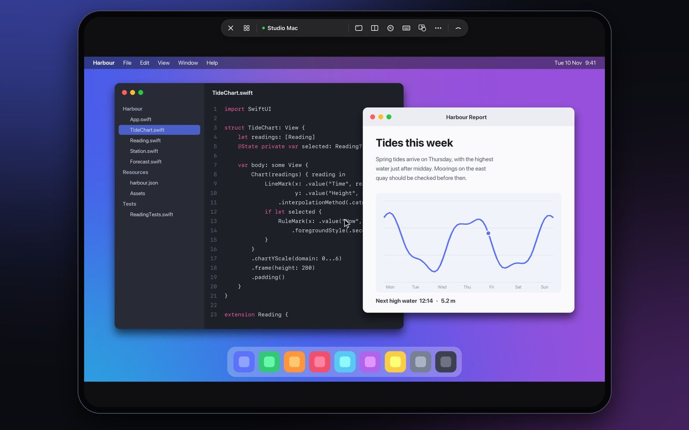
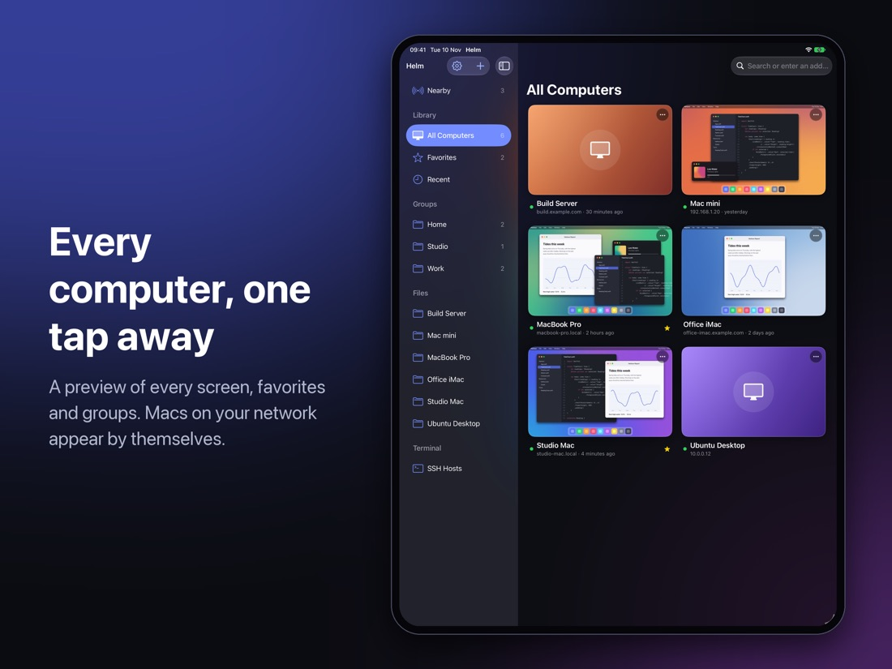
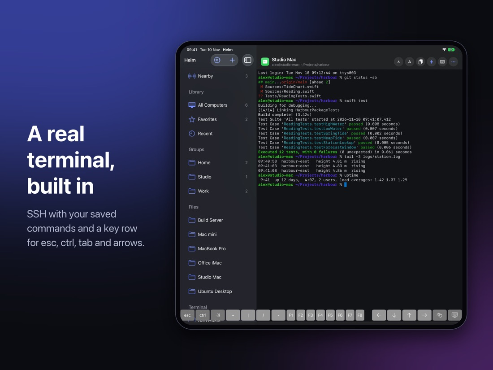
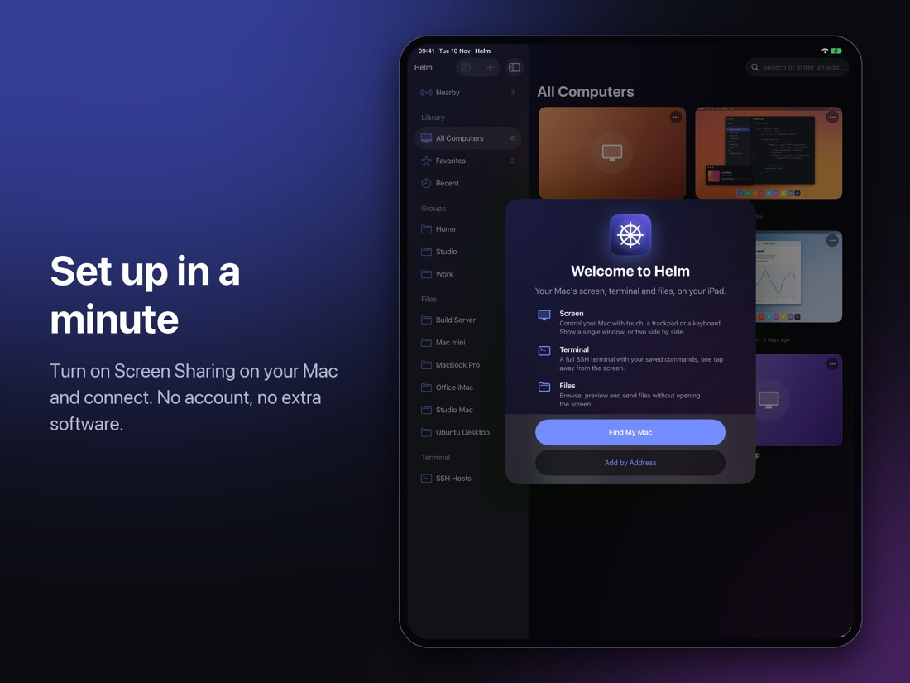

Helm puts your Mac's screen, a real SSH terminal and its files on your iPad, with Helm AI to check on your Mac for you. Your iPad talks straight to your computer, with nothing in between.
For iPad with iPadOS 17 or later. Your Mac needs Screen Sharing turned on, nothing else.

Touch, trackpad, mouse and keyboard all work the way you expect, at full sharpness.
Pick All to see every display, or 1 and 2 to fill the iPad with one. Helm finds where each display sits, even when they're different sizes.
Helm Host is a small, free helper for your Mac. It streams the screen to Helm as hardware-encoded video (H.264 or HEVC), so scrolling, video and animations stay fluid, even on a slow network. Without it, Helm uses the Mac's built-in Screen Sharing.
Connected to a Mac without Helm Host? Helm offers to install it for you over Remote Login. No download on the Mac needed.
Screen Recording and Accessibility, in System Settings. You can do it from the iPad, through Helm.
Helm switches to video by itself whenever Helm Host is there, and back to Screen Sharing when it isn't.
Prefer to install it yourself? Download Helm Host for Mac. Signed and notarized by Apple.
Macs on your network show up by themselves. Each one has a live preview of its screen.

Full colour, proper keys and your own shortcuts. Switch apps or lose the connection and your session is still there when you come back.

Ask in plain words. Helm AI runs the right commands on your Mac, reads the results and tells you what it found.
~/Library (88 GB, mostly Xcode caches) and ~/Movies (41 GB).Helm AI needs an iPad with Apple Intelligence (iPadOS 26 or later). Everything else in Helm works on iPadOS 17.
Browse your Mac's folders without opening its screen. Preview, save to your iPad, or send files to the Mac.
Lock Helm with its own passcode, Face ID or Touch ID. Passwords stay in your iPad's Keychain.
Away from home, reach your Mac through an SSH tunnel.
Full quality on Wi-Fi, lighter on cellular, and only the part of the screen you're looking at.
Switch the Mac's display to an iPad-shaped resolution while you're connected.
Copy on the Mac, paste on the iPad, and the other way round.
Step-by-step help is on the support page.

Yes. There's no subscription, no in-app purchase, no account and no ads.
No. Helm connects straight from your iPad to your Mac. There are no Helm servers at all, and Helm collects no data. See the privacy policy.
No. Helm works with the Screen Sharing built into every Mac. Helm Host is an optional free helper that makes the picture smoother and sharper by sending it as video.
Yes, if your Mac can be reached from where you are, for example through a VPN. Helm can also use an encrypted SSH tunnel.
With any computer that runs a VNC server, and the terminal works with any SSH server. Helm Host, Helm AI and display detection are made for Macs.
Any iPad with iPadOS 17 or later. Helm AI needs an iPad with Apple Intelligence.